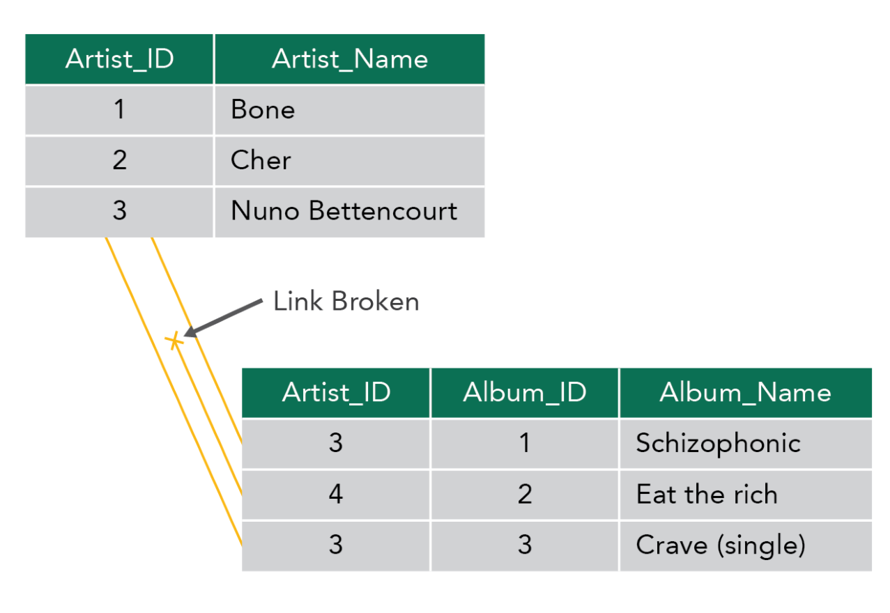

Securing test data is no different from securing any other type
of data in terms of the reasons for doing it (ensure confidentiality and integrity)
and how to do it (apply safeguards and countermeasures).
Objective
Explain the generation of test data and ramifications of using production data.
Overview
Test data must be precise and complete. In most cases, using
production data in a test environment is not acceptable, especially when dealing
with privacy data. Safeguards must be put in place to protect nonconfidential
information in every environment as deemed necessary.
Generate Test Data
Test data is data that has been specifically identified for use
in tests. Test data must be managed carefully to ensure confidentiality and privacy.
Test data is often overlooked by those using it as well as those
who are charged to protect it. Often test databases are compiled from production
data. This production database may contain specific, if not sensitive, data such as
employee information, payroll data, sales forecasts, and customer information.
Large Volumes of Data
When large volumes of test data are needed to test an
application (e.g., for performance testing, load testing, or stress testing), manual
insertion of data in a database is not a practical option. Test data generation
tools may be used for this purpose.
Production Data
If sensitive data is extracted from production databases and
moved or used as test data, the security of the sensitive data may be compromised.
This data must be sanitized by whatever means possible before it can be used. Once
data has been moved out of production, security controls are often not as
restrictive. Often it is moved to a less restrictive site, and access is given to a
wide variety of developers and QA personnel. To avoid this situation, test data
should be generated from generic data or sanitized to eliminate security issues
regarding sensitive data.
In cases where production data needs to be migrated, only
nonconfidential information must be migrated or the data must be obfuscated or
masked. Referential integrity constraints may pose a challenge.
Referential Integrity
Relational database management systems (RDBMSs) must provide
methods for preserving the consistency and integrity of data in the database. Nearly
all RDBMS products on the market today, whether commercial or open source, have a
way of enforcing the referential integrity rules.
Referential integrity relies on the concept of primary keys
(unique identifiers) and foreign keys when relationships are set up in the database.
To maintain integrity, operations performed on one table may require operations to
be performed on other tables as well.
As an example, if a record is removed from one table,
corresponding records may also have to be removed (e.g., through cascade delete
operation) from a related table to maintain the integrity of the database and
prevent records from becoming orphaned, as shown in this figure. There is a foreign
key (Artist_ID) value in the album table that references a nonexistent artist.

Figure 13: Broken Link
Statistical Quality
Depending on the type and the objective of the test, selected
test data may need to meet certain quality requirements. When these quality
requirements are not met, results of the test may not be accurate and test goals may
not be reached.
Production Representative
One possibility is for organizations to attempt to use subsets
of production databases that are relevant to the test cases.
Creating referentially intact data subsets of production data
for modern enterprise applications can be a daunting task. Enterprise applications
may be complex, spanning multiple schemas containing thousands of tables governed by
myriad business rules. The reason for the difficulty lies in the large and often
complex data models that govern the relationships between the columns of the tables
that sometimes span across different schemas.
Production Data Reuse
Prior to the use of production data for testing, security and
privacy risks must be weighed against the potential benefits of reuse. Generally,
the use of production data for testing requires altering or removing sensitive
information. (i.e., masking),
anonymization, and tokenization are different techniques for protecting data without
encryption.
Obfuscation
Data masking and data obfuscation are the processes of hiding,
replacing, or omitting sensitive information from a specific data set. Data masking
is usually used to protect specific data sets such as PII or commercially sensitive
data or to comply with certain regulations such as HIPAA or PCI-DSS. Data masking
and obfuscation are also widely used for test platforms (where suitable test data is
not available). Both techniques are typically applied when migrating test or
development environments to the cloud or when protecting production environments
from threats such as data exposure by insiders or outsiders.
Anonymization
is the process of removing
identifiers to prevent identification of individuals or sensitive information. The
process of anonymization is similar to masking and includes identifying the relevant
information to anonymize and choosing a relevant method for obscuring the data.
Since true anonymization is difficult to achieve, some
organizations may consider the use of pseudonymization techniques, which involve
replacing actual data with pseudonyms. GDPR has defined pseudonymization as the
processing of personal data in such a way that the data can no longer be attributed
to a specific data subject without the use of additional information.
Techniques to pseudonymize data have been proposed, including
scrambling, encryption, tokenization, and data blurring. It is important to
understand that pseudonymization does not equate to anonymization.
Tokenization
, like anonymization, aims to
prevent identification of individuals or leakage of sensitive information. Unlike
anonymization, tokenization involves swapping sensitive data with a generated
identifier (i.e., token). Further, tokens cannot be reverse engineered to reveal the
original data because the token was not derived from the data it represents. The
system of origin must be used to perform de-tokenization. Tokenization is used
frequently in the payment card industry.
Sanitization
marks the end of the test
data life cycle. More specifically, sanitization is a process to render access to
data on the media infeasible for a given level of effort. Clear, Purge, and Destroy
are actions that can be taken to sanitize media. NIST SP 800-88 Guidelines for Media
Sanitization provides techniques which can easily be adapted to support software
testing data.
Data Security Testing (6.7)
Securing test data is no different from securing any other type of data in terms of the reasons for doing it (ensure confidentiality and integrity) and how to do it (apply safeguards and countermeasures).
Objective
Overview
Test data must be precise and complete. In most cases, using production data in a test environment is not acceptable, especially when dealing with privacy data. Safeguards must be put in place to protect nonconfidential information in every environment as deemed necessary.
Generate Test Data
Test data is data that has been specifically identified for use in tests. Test data must be managed carefully to ensure confidentiality and privacy.
Test data is often overlooked by those using it as well as those who are charged to protect it. Often test databases are compiled from production data. This production database may contain specific, if not sensitive, data such as employee information, payroll data, sales forecasts, and customer information.
Large Volumes of Data
When large volumes of test data are needed to test an application (e.g., for performance testing, load testing, or stress testing), manual insertion of data in a database is not a practical option. Test data generation tools may be used for this purpose.
Production Data
If sensitive data is extracted from production databases and moved or used as test data, the security of the sensitive data may be compromised. This data must be sanitized by whatever means possible before it can be used. Once data has been moved out of production, security controls are often not as restrictive. Often it is moved to a less restrictive site, and access is given to a wide variety of developers and QA personnel. To avoid this situation, test data should be generated from generic data or sanitized to eliminate security issues regarding sensitive data.
In cases where production data needs to be migrated, only nonconfidential information must be migrated or the data must be obfuscated or masked. Referential integrity constraints may pose a challenge.
Referential Integrity
Relational database management systems (RDBMSs) must provide methods for preserving the consistency and integrity of data in the database. Nearly all RDBMS products on the market today, whether commercial or open source, have a way of enforcing the referential integrity rules.
Referential integrity relies on the concept of primary keys (unique identifiers) and foreign keys when relationships are set up in the database. To maintain integrity, operations performed on one table may require operations to be performed on other tables as well.
As an example, if a record is removed from one table, corresponding records may also have to be removed (e.g., through cascade delete operation) from a related table to maintain the integrity of the database and prevent records from becoming orphaned, as shown in this figure. There is a foreign key (Artist_ID) value in the album table that references a nonexistent artist.
Figure 13: Broken Link
Statistical Quality
Depending on the type and the objective of the test, selected test data may need to meet certain quality requirements. When these quality requirements are not met, results of the test may not be accurate and test goals may not be reached.
Production Representative
One possibility is for organizations to attempt to use subsets of production databases that are relevant to the test cases.
Creating referentially intact data subsets of production data for modern enterprise applications can be a daunting task. Enterprise applications may be complex, spanning multiple schemas containing thousands of tables governed by myriad business rules. The reason for the difficulty lies in the large and often complex data models that govern the relationships between the columns of the tables that sometimes span across different schemas.
Production Data Reuse
Prior to the use of production data for testing, security and privacy risks must be weighed against the potential benefits of reuse. Generally, the use of production data for testing requires altering or removing sensitive information. (i.e., masking), anonymization, and tokenization are different techniques for protecting data without encryption.
Obfuscation
Data masking and data obfuscation are the processes of hiding, replacing, or omitting sensitive information from a specific data set. Data masking is usually used to protect specific data sets such as PII or commercially sensitive data or to comply with certain regulations such as HIPAA or PCI-DSS. Data masking and obfuscation are also widely used for test platforms (where suitable test data is not available). Both techniques are typically applied when migrating test or development environments to the cloud or when protecting production environments from threats such as data exposure by insiders or outsiders.
Anonymization
is the process of removing identifiers to prevent identification of individuals or sensitive information. The process of anonymization is similar to masking and includes identifying the relevant information to anonymize and choosing a relevant method for obscuring the data.
Since true anonymization is difficult to achieve, some organizations may consider the use of pseudonymization techniques, which involve replacing actual data with pseudonyms. GDPR has defined pseudonymization as the processing of personal data in such a way that the data can no longer be attributed to a specific data subject without the use of additional information.
Techniques to pseudonymize data have been proposed, including scrambling, encryption, tokenization, and data blurring. It is important to understand that pseudonymization does not equate to anonymization.
Tokenization
, like anonymization, aims to prevent identification of individuals or leakage of sensitive information. Unlike anonymization, tokenization involves swapping sensitive data with a generated identifier (i.e., token). Further, tokens cannot be reverse engineered to reveal the original data because the token was not derived from the data it represents. The system of origin must be used to perform de-tokenization. Tokenization is used frequently in the payment card industry.
Sanitization
marks the end of the test data life cycle. More specifically, sanitization is a process to render access to data on the media infeasible for a given level of effort. Clear, Purge, and Destroy are actions that can be taken to sanitize media. NIST SP 800-88 Guidelines for Media Sanitization provides techniques which can easily be adapted to support software testing data.